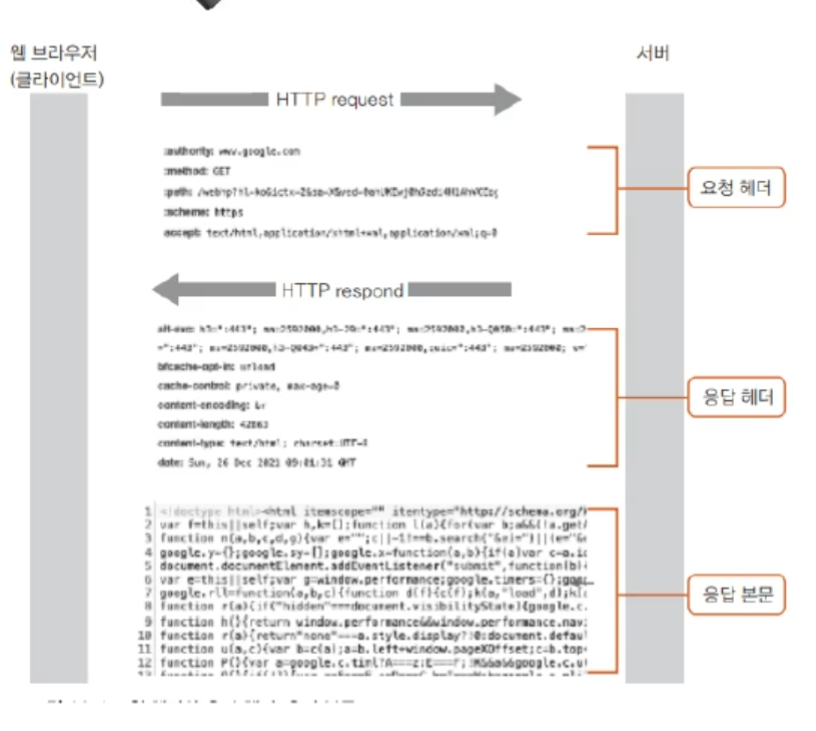
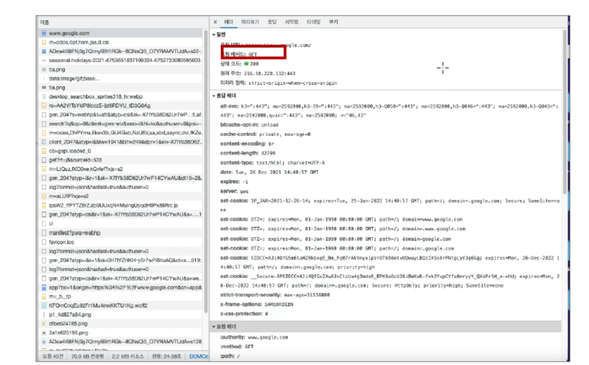

Chapter 12
Chapter 12 summary
HTTP/HTTPS
HTTP란
클라이언트와 서버 간에 자료를 주고받으려면 미리 약속된 규칙이 필요하다.
이것을 프로토콜(protocol)이라고 하고, 웹에서는 HTTP (HyperText Transfer Protocol)라는 프로토콜을 사용한다.
클라이언트에서 서버로 자료 요청하는 것은 HTTP 요청 (HTTP request),
서버에서 응답해서 클라이언트로 자료를 보내는 것은 HTTP 응답 (HTTP response)이라고 한다.
[HTTP 통신 흐름]
웹 브라우저 (클라이언트) → HTTP 요청 → 서버
서버 → HTTP 응답 → 웹 브라우저 (클라이언트)
요청 헤더와 응답 헤더

클라이언트에서 사이트 주소를 입력하고 [Enter]를 누를 때
사이트 주소뿐만 아니라 사용 중인 시스템 정보와 웹 브라우저 정보, 사용한 언어 등 다양한 정보까지 함께 전송된다. → 서버로 요청할 때 보내는 헤더를 ‘요청 헤더(request header)’라고 한다.
서버에서 입력한 사이트를 찾아서 클라이언트로 보낼 때
응답 메시지를 보내는 시간, 메시지를 클라이언트에 어떻게 표시할지 등의 정보는 ‘응답 헤더(response header)’에 담기고
이미지나 텍스트 같은 실제 사이트 내용은 ‘응답 본문(response body)’에 담겨서 전달된다.
요청 헤더 예시

요청 헤더(Request Header)
웹 브라우저(클라이언트)에서 서버에 요청을 보낼 때 함께 전송되는 정보들이다. 예를 들어 위 이미지처럼:
요청 메서드(Method): GET
요청 URL: https://www.google.com/
요청 헤더 항목들: host, user-agent, accept, cookie 등
이런 헤더 정보는 서버가 어떤 데이터를, 어떤 형식으로 반환할지 판단하는 데 사용된다.